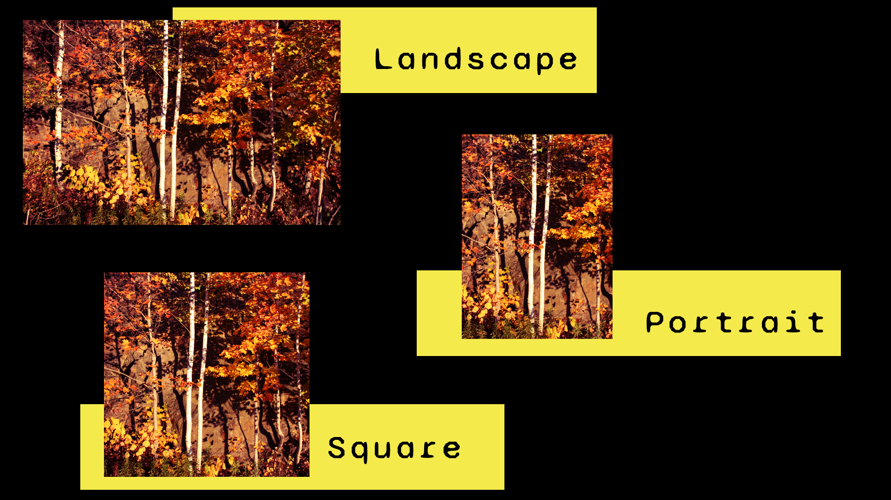

Manipulating Colour in Photoshop
One effective way to change the mood of an image is to change its colour. There are various methods for changing image colour in Photoshop, some involve overall colour changes whiles others are more precise.
Adjustment layers
- Curves
- Color Balance
- Hue/Saturation
- Photo Filter
Adding Colour
- Add Solid Colour or Gradient Layer
- Paintbrush tools on blank layer
- Experiment with blending and opacity
We will be reviewing various techniques in class. More details can be found on the Adobe website.
Digital Repair and Replication
Another method for manipulating images in Photoshop is to replicate pixels, altering how the image appears. Such techniques are common for repairs and retouching, but can also be used for creating hoaxes or other misleading images. Such techniques take advantage of our trust in photographs as being "truth" and our belief photography's capacity to represent the world objectively in accurately.
When undertaking such replication work in Photoshop, make sure to create a new layer and selecting "Sample: All Layers" or to duplicate the background layer in order to preserve original. This process is referred to as non-destructive editing.
Healing and Replication tools
- fix-it paintbrush, corrects tones based on sample of nearby pixels
- Clone Stamp: replicates selection of pixels. This involves a two step operation; first make selection and then repair
- Healing Brush: combination of the Spot Healing Brush tool and the Clone Stamp tool; sample a source and tries to even out adjacent tones and blemishes based on nearby pixel information.
Make sure to create a separate layer for each repair and name the layer with the appropriate edit. Repairs files typically include many layers for all different stages or sections of repairs. For more details, see Retouch and Repair Photos in the Adobe User Guide or the Adobe tutorial Retouch Images.
Combining images
Photoshop also enables more complex image combinations for the creation of surreal scenes and collages. This can be done by selecting elements from an image, masking them, adn then bringing them into a single file. For tips, see the tutorial Combine images in Creative Ways and What is Selection in Photoshop?on the Adobe Website.
Some points to keep in mind when combining images:
- Experiment with contrast and scale in compositions
- Adjustment layers only effect the layers below them. You can be more precise with adjustment layer edits by using clipping masks.
- Try using blending layers and play with opacity for different effects
- Check that resolution of all images requires downsizing and not upsizing. If downloading material from the Internet, ensure that you are downloading the largest files sizes available.

Image credit: untitled montage by EL Putnam, 2022
Optimising Images
Image optimisation is necessary or uploading images to websites. It is important to optimise images to improve site performance and to ensure images look good. If images are too large, they take up too much storage space and slow down load times, which can cause people to leave site. If they are too small, images can appear distorted, which can undermine credibility. Make sure to size images that meet dimensions and orientation on website. This may involve making multiple versions on an image in different sizes.

File naming and type
Name your file appropriately in a way that is clear and descriptive to improve search engine optimisation (SEO). For example, the image above is called Image-Orientation-Guide.png. Photoshop files (.psd) do not load on websites, so change to a web friendly format such as .jpg or .png.
Assignment 2: Image Optimisation
Assignment Overview
Using a photograph of your own that you have brought into Photoshop, tell a story with that one image. Add text in Photoshop and add fill/adjustment layers or filters. You can also create a collage using masks. Note that you can also include open source imagery if you are making a collage, but at least one image must be your own. Identify which image is your own in the layer name.
Save that image as a .psd file showing layers and then optimize it for web, saving a copy as a .png file. Place both the psd and the png in a folder, compress the folder to turn it into a zip file and then upload that zipped file with both images to Moodle. Please note that Moodle allows a maximum upload file size of 100 MB. If you are unable to upload for folder due to file size constraints, you may need to resize your .psd file prior to submitting. Late submission will be penalised. Due Friday November 25 by 5 pm.
Note that Adobe offers a 7-day trial of Photoshop if you would like to work on the assignment using your own computer. Make sure to cancel your subscription, however, if you do not wish to pay for Adobe Creative Cloud. You can get a discounted student rate on Adobe Creative Cloud for the first year. This week's lab will be dedicated to working on assignment two, so make sure to start work on assignment (such as taking pictures that you can use) prior to coming to class. The Mac Lab is also available for you to use all day Friday in order to finish the assignment. Please note that you can use the Mac Lab to work on assignments whenever there is a class NOT in session.
Assessment Criteria
- Image saved correctly as both .psd with layers and separate .png file
- .png version is optimised for web
- Image displays technical competence: text added correctly, uses filters and fill/adjustment layers effectively, and (if applicable) combines images uses layers and masks. Layers will be visible and reviewed in the Photoshop file.
- Content and concept of image conveys creative initiative and effort.
Check before submitting
- Image saved as both .psd and .png files; both files are in zipped folder
- File names are in accordance to the following format: LastName_IDnumber_assign2
- .psd file contains layers
- .png file is resized for web optimisation